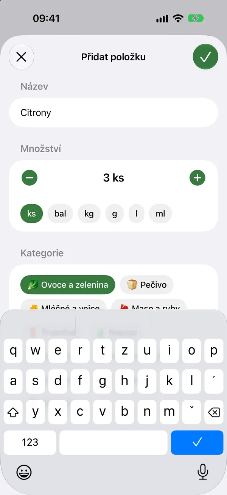

Jak vytvořit nákupní seznam na iPhonu
-
Krok 1 Otevřete nákupní seznam
Po spuštění Shoppie jste rovnou v kartě Seznam s výchozím seznamem Potraviny. Nic nemusíte zakládat ani se registrovat.

-
Krok 2 Klepněte na +
Klepněte na zelené tlačítko + dole. Otevře se okno Přidat položku.
-
Krok 3 Napište název a množství
Do pole Název napište, co chcete koupit, například citrony. Množství nastavíte zelenými tlačítky − a + a vyberete jednotku (ks, bal, kg, g, l, ml). Kategorii Shoppie u běžných produktů doplní sám.

-
Krok 4 Potvrďte
Klepněte na zelenou fajfku ✓ vpravo nahoře, nebo stiskněte Enter na klávesnici. Položka je v seznamu.
-
Krok 5 V obchodě položky odškrtávejte
Když věc vložíte do košíku, klepněte na kroužek u položky. Přesune se do části V košíku.
Časté otázky
Je aplikace Shoppie zdarma?
Ano. Shoppie je zdarma, bez reklam a bez registrace. Funguje na iPhonu s iOS 26 a novějším.
Musím se registrovat?
Ne. Shoppie nepotřebuje účet. Data jsou ve vašem iPhonu a ve vašem soukromém iCloudu.
Další otázky najdete na stránce Podpora.